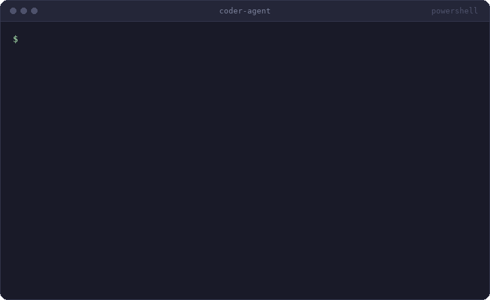

Capabilities
search · edit · execute · test
01 / 16
Autonomous coding agent
An autonomous agent that understands codebases, makes changes, and validates solutions through testing.

The agent
A command-line agent that takes a repository task, edits files, and verifies the change.
$ coder run ./repo "make the failing tests pass"
search · edit · execute · test
plan → act → verify → retry
LangGraph · LLMs · MCP · RAG
Two loops drive the agent · 1 of 2
Plan, execute, run the repository's tests, and re-plan from the failure output.
Two loops drive the agent · 2 of 2
The model requests tool calls, they run, and the results go back to it. This is the Act step of the outer loop.
How it fits together
Components, and the boundaries between them.
coder runTools
A standard Model Context Protocol client and a local server, exchanging JSON-RPC over stdio.
read_fileread a file or a line rangelist_dirlist a directory treesearch_coderegex search across the repoedit_filereplace an exact stringwrite_filecreate or overwrite a filerun_commandshell command, in the sandboxTypical sequence
search_code→read_file→edit_file→run_command→result back to the model
Retrieval
Index the code once, then retrieve the most relevant chunks for each task.
Defaults: ≤ 1,500 characters per chunk · 60-line fallback window · 10-line overlap · 384-D embeddings · optional cross-encoder reranker
State
What the model sees on each call, and what a run can resume from.
Messages, tool calls and tool results, held in LangGraph state and appended by its message reducer.
State persisted to SQLite after every step, so a run can pause for approval and resume.
Safety
Checked by tests, contained by a sandbox, approved by a person, and kept running by a fallback model.
The repository's own tests decide pass or fail; failures feed the repair loop.
≤ 4 iterations · ≤ 40 Act calls
Path jail, command denylist, optional Docker container.
1 GB · 1 CPU · no network · capabilities dropped
Approval before every edit, write or shell command.
pause → checkpoint → resume
SDK retries, then backoff with jitter, then a second provider.
gpt-oss-120b (Groq) → Gemini 2.5 Flash
Measurement
What happened in each run, and what it cost.
What happened?
Every node, model call and tool call, in order, with inputs, outputs and latency.
planacttoolsrun_tests✗reflectschematic: one bar per step, along the run's time
What did it cost?
Per run: outcome, wall time, iterations and tokens. Per node: calls and token counts.
plan
act
run_tests
schematic: one row per graph node, summed over the run
Results · overview
Each task is graded by hidden tests the agent never sees. pass@1: solved on a single run.
gpt-oss-120b
12 / 12
pass@1
K2-Think-v2
11 / 12
pass@1
K2-Think-v2
30 / 30
pass@1
Results · by category
K2-Think-v2 missed one multi-file task at the 40-step cap; every other task passed its hidden tests.
Results · a surprising one
The 12-task suite once per retrieval mode, on K2-Think-v2, at a single commit.
0.99file recall@3 on 40 retrieval queries, every mode
0.56 → 0.76MRR with the cross-encoder reranker
The benchmark repositories have three to five files: the model finds the right one with a single list_dir, whichever way retrieval ranks it.
Results · cost
Tokens per run by graph node, averaged over 12 runs of K2-Think-v2.
~99%
of tokens are spent in Act, the tool-calling step
Every model call on a free tier, every embedding computed locally.
Results · the same twelve tasks
Same suite, graph and retrieval. Only the model changes.
K2-Think-v2 is faster per task but uses more than twice the tokens: about 15 tool-calling steps against 11, each one resending the conversation.
Looking forward to our discussion.